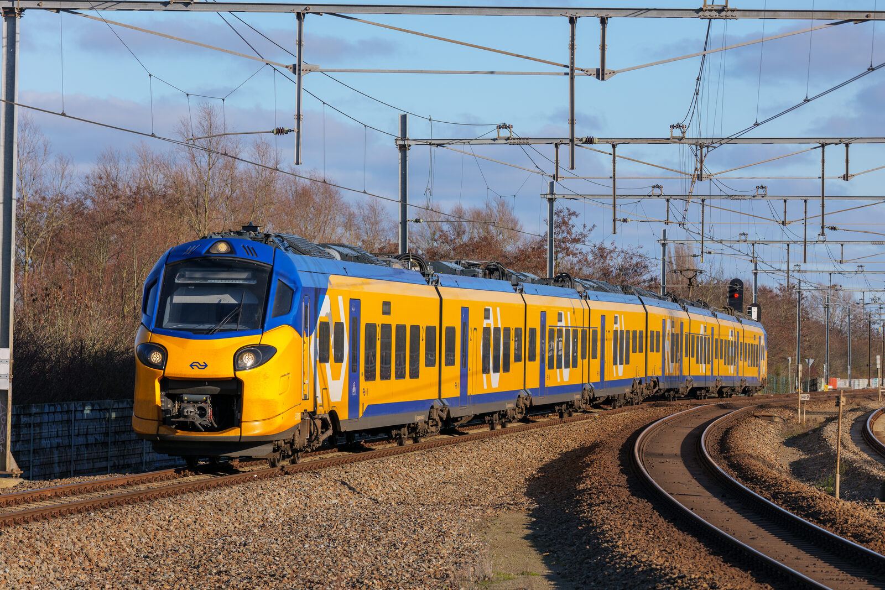

Sticlă switchable PDLC laminată — trece din transparent în opac în < 100 ms. Pentru compartimente VIP, cabine PMR cu intimitate, separatoare manageriale și panouri proiecție pe trenuri premium.

RAILSMART este sticlă laminată cu film PDLC (Polymer Dispersed Liquid Crystal) integrat între două straturi de geam. Fără tensiune electrică = opac (lăptos, blochează vederea, păstrează lumina). Cu tensiune = transparent clar.
Tranziție < 100 ms, comandă on/off sau dimming cu controller integrat. Compatibil cu sisteme HVAC, BMS de tren, sau buton local pasager. Aplicabilă acolo unde flexibilitatea utilizării spațiului contează: compartimente VIP, cabine PMR, separatoare manager, panouri proiecție.
Parametri standard pentru linia RAILSMART. Configurări custom la cerere.
| Configurație tipică | 5/0.8 PDLC/5 mm · 6/0.8 PDLC/6 mm |
|---|---|
| Grosime totală | 11 – 15 mm (standard) · custom până la 30 mm |
| Tensiune operare | 48 V AC / 60 V AC (50-60 Hz) · driver inclus pentru 12 V DC / 230 V AC |
| Consum | ~ 5 W/m² (opac → transparent) |
| Timp tranziție | < 100 ms (on/off) · gradient dimming opțional |
| Transparență „on" | Visibility light: ≥ 75% · haze ≤ 8% |
| Opacitate „off" | Haze ≥ 92% (lăptos, nu blochează lumina) |
| Durabilitate | > 50.000 cicluri on/off · > 10 ani temperatură -20 / +60 °C |
| Conectivitate | Cabluri laterale invizibile · integrare BMS posibilă |
| Lead time tipic | 4 – 6 săptămâni de la confirmare specificație |
Două stări binare (transparent / opac) cu buton local sau control HVAC. Cea mai rapidă producție.
Tranziție gradată 0–100% prin slider sau control BMS. Pentru cabine premium cu lumină ambient.
Rear-projection ready — opac alb-lăptos înlocuiește ecranele LCD pentru informare pasageri sau publicitate.
Vagoane cls. 1 + bar-bistro din contractul Remarul Cluj — separatoare cu intimitate la cerere pentru pasageri premium.
Spațiile cu dotări PMR (Persoane cu Mobilitate Redusă) din contractul Electroputere VFU Pașcani — intimitate temporară pentru asistență.
Separatoare cabină mecanic ↔ pasageri pe trenuri moderne — transparent în lucru, opac la pauza pasagerilor.
Inginerii noștri pregătesc configurarea exactă pentru aplicația ta în maxim 24 ore.
Cere ofertă tehnică →